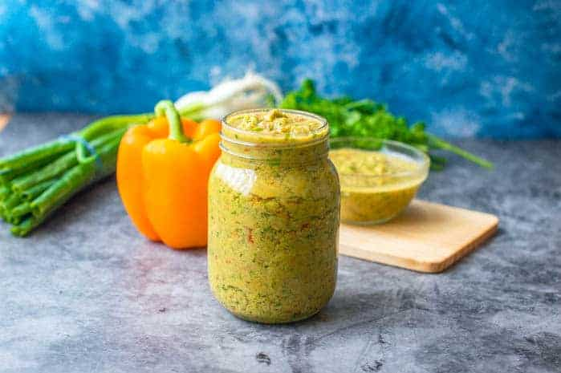

Epis (Haitian Seasoning)

The heart of Haitian cuisine!
Epis is a Haitian seasoning base. Many caribbean countries share similar ingredients, spices, and
dishes; however, epis makes a dish have that distinctive Haitian flavor. Epis is used in the majority of Haitian
foods and it the most important staple in a Haitian kitchen. The seasoning base consist of various vegetables, herbs and spices.
Epis is traditionally a rich green color, but the base can have a green-brownish color or vibrant orange-red color.
Ingredients List
- 10 springs of parsley
- 1 onion
- 2 celey stalks
- 2 green bell peppers (or any color you prefer)
- 3 scallion stalks
- 2 chicken bouillon cubes
- 5 springs of thyme
- 3 heads of garlic
- 1 lime or lime juice
- Olive oil
- Vinegar
Steps
- Remove the stems from the ingrediens.
- Chop the vegetables and herbs into medium-sized pieces.
- Add the onions, peppers, herbs, garlic, and bouillon cubes into a blender.
- Add 1 tbs of vinegar and 2 tbs of lime juice to the mixture.
- Puree the indregients and slowly pour a 1/4 cup of olive oil into the mixture until the seasoning base has a even consistency.
- The consistency should resemble a slightly thick puree.
- Pour your epis into a jair or container and store the base in the refrigerator.